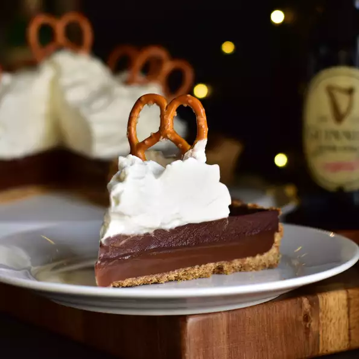

guinness-chocolate-and-caramel-tart

Description
A bittersweet, dark, Guinness®-chocolate layer sits atop chewy caramel and salty pretzels for a rich dessert that's sure to wow. Plan ahead as this takes quite a bit of prep and cooling time. Make sure to read through the entire recipe before starting. Serve this tart at room temp, topped with some whiskey whipped cream, extra pretzels, and a sprinkle of sea salt to taste.
- 1 ½ cups finely crushed pretzels
- ⅓ cup firmly packed dark brown sugar
- 6 tablespoons unsalted butter, melted
- ⅛ teaspoon salt, or to taste
- Preheat the oven to 350 degrees F (175 degrees C). Lightly grease a 9-inch tart pan with a removable bottom.
- Mix pretzel crumbs, brown sugar, melted butter, and salt together in a bowl until mixture resembles wet sand. Pour into the tart pan, and press very firmly and evenly up the sides and into the bottom of the pan.
- Place tart pan onto a baking sheet and bake until crust is golden brown, 10 to 15 minutes. Allow crust to cool completely in pan, about 30 minutes.
- Combine heavy cream, butter, vanilla extract, and salt in a small saucepan over medium-low heat and cook until butter is melted and mixture begins to bubble, 3 to 5 minutes. Remove from heat, set aside, and keep warm.